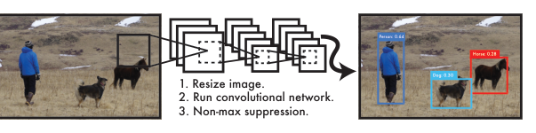
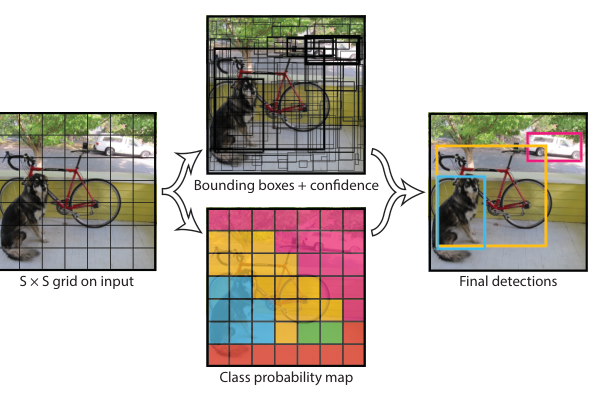
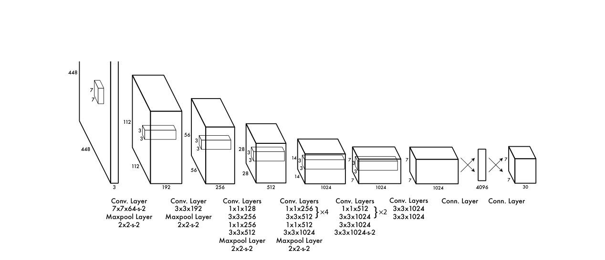
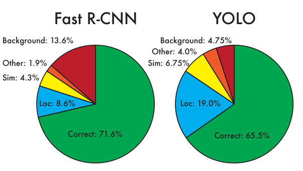
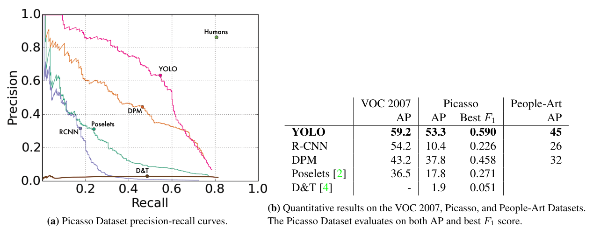
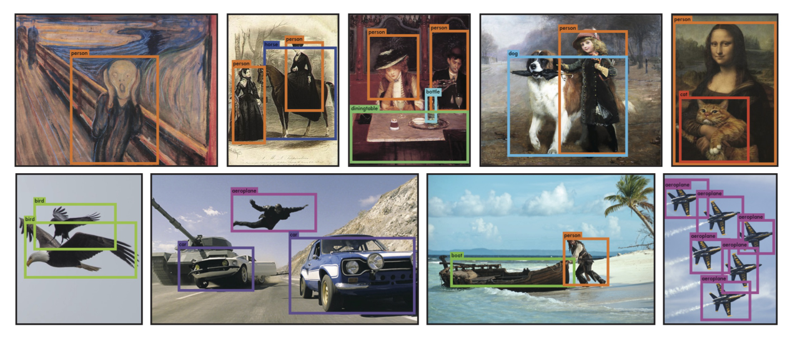

You Only Look Once: 통합형 실시간 객체 탐지
You Only Look Once: Unified, Real-Time Object Detection
YOLO(You Only Look Once)는 기존의 슬라이딩 윈도우(sliding window)나 영역 제안(region proposal) 기반의 다단계 객체 탐지 파이프라인을 버리고, 객체 탐지를 단일 회귀(regression) 문제로 재정의한 최초의 통합형 실시간 객체 탐지 모델입니다. 단일 합성곱 신경망(CNN)이 전체 이미지를 단 한 번만 보고 공간적으로 분리된 경계 상자(bounding box) 좌표와 클래스 확률을 동시에 직접 예측하므로, 탐지 성능에 대해 종단간(end-to-end) 최적화가 가능합니다.
- 초고속 실시간 추론: 기본 YOLO 모델은 Titan X GPU 기준 45 FPS(지연 시간 25ms 미만, 63.4% mAP)로 동작하며, 경량 버전인 Fast YOLO는 155 FPS라는 초고속으로 처리하면서도 기존 실시간 탐지기(예: 30Hz DPM 26.1% mAP) 대비 2배 이상 높은 52.7% mAP를 기록했습니다.
- 전역적 문맥 추론: 훈련과 테스트 시 전체 이미지를 한눈에 보기 때문에 클래스 외형뿐 아니라 주변 문맥(context) 정보를 암묵적으로 학습하며, 배경 오탐(background false positives)이 Fast R-CNN 대비 절반 이하(4.75% vs. 13.6%)로 줄었습니다.
- 상호 보완성 및 도메인 일반화: PASCAL VOC 2007에서 YOLO 단독으로 63.4% mAP를 기록했고, Fast R-CNN과 결합 시 75.0% mAP(+3.2%)로 성능을 크게 끌어올렸습니다. 또한 자연 이미지로 학습한 뒤 미술 작품(Picasso, People-Art)에 적용했을 때도 DPM·R-CNN보다 훨씬 뛰어난 일반화 성능을 보였습니다.
초록 (Abstract)
본 논문에서는 객체 탐지(object detection)에 대한 새로운 접근법인 YOLO를 제안한다. 기존의 객체 탐지 연구들은 분류기(classifier)를 재활용하여 탐지를 수행해 왔다. 반면 우리는 객체 탐지를 공간적으로 분리된 경계 상자(bounding box)와 그에 연관된 클래스 확률(class probability)을 예측하는 단일 회귀 문제(regression problem)로 정식화한다. 단일 신경망이 단 한 번의 평가(one evaluation)만으로 전체 이미지로부터 직접 경계 상자와 클래스 확률을 예측한다. 전체 탐지 파이프라인이 하나의 신경망으로 구성되어 있으므로, 탐지 성능 자체를 목표로 종단간(end-to-end) 직접 최적화가 가능하다.
우리의 통합 아키텍처는 극도로 빠르다. 기본 YOLO 모델은 초당 45프레임(45 FPS)의 실시간 속도로 이미지를 처리한다. 네트워크를 축소한 버전인 Fast YOLO는 무려 초당 155프레임(155 FPS)이라는 놀라운 속도로 처리하면서도 다른 실시간 탐지기들보다 2배 높은 mAP(mean Average Precision)를 달성한다. 최신(state-of-the-art) 탐지 시스템들과 비교하면 YOLO는 위치 추정 오류(localization error)가 다소 더 많지만, 배경을 객체로 잘못 예측하는 위양성(false positive)은 훨씬 적다. 마지막으로 YOLO는 객체에 대해 매우 범용적인 표현(general representation)을 학습한다. 자연 이미지에서 미술 작품(artwork)과 같은 다른 도메인으로 일반화할 때 DPM이나 R-CNN을 포함한 여타 탐지 기법들보다 뛰어난 성능을 보인다.
1. 서론 (Introduction)
사람은 이미지를 힐끗 보기만 해도 이미지 속에 어떤 객체들이 있는지, 어디에 있는지, 그리고 서로 어떻게 상호작용하는지를 즉각적으로 파악한다. 인간의 시각 체계는 빠르고 정확하여, 운전과 같은 복잡한 과업도 의식적인 사고를 거의 들이지 않고 수행할 수 있게 해 준다. 빠르고 정확한 객체 탐지 알고리즘이 개발된다면 컴퓨터가 특수 센서 없이도 자동차를 운전할 수 있고, 보조 장치가 사용자에게 실시간 장면 정보를 전달할 수 있으며, 범용적이고 즉각 반응하는 로봇 시스템의 잠재력을 열어 줄 수 있다.
현재의 탐지 시스템들은 탐지를 수행하기 위해 분류기를 재활용한다. 객체를 탐지하기 위해 해당 객체의 분류기를 가져와 테스트 이미지의 다양한 위치(location)와 크기(scale)에서 반복적으로 평가하는 방식이다. 변형 가능 부품 모델(DPM, Deformable Parts Models)과 같은 시스템은 이미지 전체에 걸쳐 일정한 간격으로 배치된 위치마다 분류기를 실행하는 슬라이딩 윈도우(sliding window) 방식을 사용한다 [10].

R-CNN과 같은 보다 최근의 접근법은 영역 제안(region proposal) 기법을 사용해 먼저 이미지 내에서 잠재적인 경계 상자들을 생성한 다음, 제안된 상자들에 대해 분류기를 실행한다. 분류가 끝난 뒤에는 경계 상자를 미세 조정하고, 중복 탐지를 제거하며, 장면 내 다른 객체들을 바탕으로 상자의 점수를 다시 매기는 후처리(post-processing)가 뒤따른다 [13]. 이러한 복잡한 파이프라인은 각 개별 구성 요소를 따로따로 학습시켜야 하므로 느리고 최적화하기 어렵다.
우리는 객체 탐지를 이미지 픽셀로부터 경계 상자 좌표와 클래스 확률로 곧장 이어지는 단일 회귀 문제로 재정의한다. 우리의 시스템을 사용하면 이미지에 어떤 객체가 존재하고 어디에 있는지를 예측하기 위해 이미지를 단 한 번만 보면 된다(You Only Look Once, YOLO).
YOLO는 그림 1에서 볼 수 있듯 놀라울 정도로 단순하다. 단일 합성곱 신경망(convolutional network)이 여러 개의 경계 상자와 각 상자에 대한 클래스 확률을 동시에 예측한다. YOLO는 전체 이미지를 대상으로 학습하며 탐지 성능을 직접 최적화한다. 이러한 통합 모델(unified model)은 전통적인 객체 탐지 기법들에 비해 몇 가지 뚜렷한 이점을 가진다.
첫째, YOLO는 매우 빠르다. 탐지를 회귀 문제로 정식화했기 때문에 복잡한 파이프라인이 필요 없다. 테스트 시에는 단순히 새로운 이미지에 대해 신경망을 한 번 실행하기만 하면 탐지 결과를 예측할 수 있다. 기본 네트워크는 Titan X GPU에서 배치 처리(batch processing) 없이 초당 45프레임(45 FPS)으로 동작하며, 고속 버전은 초당 150프레임 이상으로 동작한다. 이는 스트리밍 비디오를 25밀리초(ms) 미만의 지연 시간으로 실시간 처리할 수 있음을 의미한다. 나아가 YOLO는 다른 실시간 시스템들보다 2배 이상 높은 평균 정밀도(mAP)를 달성한다. 웹캠에서 실시간으로 동작하는 시스템 데모는 프로젝트 웹페이지(http://pjreddie.com/yolo/)에서 확인할 수 있다.
둘째, YOLO는 예측을 수행할 때 이미지에 대해 전역적으로 추론한다(reasons globally). 슬라이딩 윈도우나 영역 제안 기반 기법들과 달리, YOLO는 학습과 테스트 시 모두 전체 이미지를 보기 때문에 객체의 외형뿐만 아니라 클래스에 대한 문맥적 정보(contextual information)까지 암묵적으로 부호화한다. 최고 수준의 탐지 기법 중 하나인 Fast R-CNN [14]은 더 넓은 문맥을 보지 못하기 때문에 이미지 내의 배경 패치(background patch)를 객체로 착각하는 경우가 많다. 반면 YOLO는 Fast R-CNN에 비해 배경 오류(background error)를 절반 이하로 줄인다.
셋째, YOLO는 객체에 대한 일반화 가능한 표현(generalizable representation)을 학습한다. 자연 이미지로 학습하고 미술 작품(artwork)에 대해 테스트했을 때, YOLO는 DPM이나 R-CNN 같은 최상위 탐지 기법들을 큰 격차로 앞선다. YOLO는 일반화 능력이 뛰어나기 때문에 새로운 도메인이나 예상치 못한 입력에 적용되더라도 성능이 급격히 무너질 가능성이 낮다.
다만 YOLO는 정확도 면에서는 여전히 최신 탐지 시스템들에 비해 다소 뒤처진다. 이미지 속 객체를 빠르게 식별할 수는 있지만, 일부 객체—특히 작은 객체(small object)—의 위치를 정밀하게 포착하는 데에는 어려움을 겪는다. 이러한 트레이드오프(tradeoff)는 실험 섹션에서 더 자세히 살펴본다.
우리의 모든 학습 및 테스트 코드는 오픈 소스로 공개되어 있으며, 다양한 사전 학습 모델(pretrained model) 또한 다운로드할 수 있다.
2. 통합 탐지 (Unified Detection)
우리는 객체 탐지의 분리된 구성 요소들을 단일 신경망으로 통합한다. 우리의 네트워크는 이미지 전체의 특징(feature)을 사용하여 각 경계 상자를 예측하며, 한 이미지에 존재하는 모든 클래스의 모든 경계 상자를 동시에 예측한다. 이는 네트워크가 전체 이미지와 그 안에 포함된 모든 객체에 대해 전역적으로 추론함을 의미한다. YOLO의 설계는 높은 평균 정밀도(average precision)를 유지하면서도 종단간 학습(end-to-end training)과 실시간 속도를 가능하게 한다.
본 시스템은 입력 이미지를 $S \times S$ 격자(grid)로 분할한다. 만약 어떤 객체의 중심(center)이 특정 격자 셀(grid cell) 안에 떨어지면, 그 격자 셀이 해당 객체를 탐지할 책임을 진다.
각 격자 셀은 $B$개의 경계 상자와 그 상자들에 대한 신뢰도 점수(confidence score)를 예측한다. 이 신뢰도 점수는 모델이 해당 상자에 객체가 포함되어 있다고 얼마나 확신하는지, 그리고 예측한 상자가 얼마나 정확하다고 생각하는지를 모두 반영한다. 공식적으로 신뢰도는 $\Pr(\text{Object}) \times \text{IOU}_{\text{pred}}^{\text{truth}}$로 정의한다. 만약 해당 셀에 객체가 존재하지 않는다면 신뢰도 점수는 0이어야 한다. 반대로 객체가 존재한다면 신뢰도 점수는 예측된 상자와 정답(ground truth) 상자 간의 교집합 대 합집합 비율(IOU, Intersection over Union)과 같아지기를 원한다.
각 경계 상자는 $x, y, w, h$, 그리고 신뢰도(confidence)의 5가지 예측값으로 구성된다. $(x, y)$ 좌표는 해당 격자 셀의 경계에 대한 상대적인 상자 중심 좌표를 나타낸다. 너비($w$)와 높이($h$)는 전체 이미지에 대한 상대적 크기로 예측된다. 마지막으로 신뢰도 예측값은 예측 상자와 임의의 정답 상자 간의 IOU를 나타낸다.
각 격자 셀은 또한 $C$개의 조건부 클래스 확률(conditional class probability), 즉 $\Pr(\text{Class}_i \mid \text{Object})$를 예측한다. 이 확률들은 해당 격자 셀이 객체를 포함하고 있다는 조건하에 계산된다. 상자 개수 $B$가 몇 개이든 상관없이 격자 셀당 클래스 확률 집합은 단 하나만 예측한다.
테스트 시에는 조건부 클래스 확률과 개별 상자의 신뢰도 예측값을 곱한다:
$$\Pr(\text{Class}_i \mid \text{Object}) * \Pr(\text{Object}) * \text{IOU}_{\text{pred}}^{\text{truth}} = \Pr(\text{Class}_i) * \text{IOU}_{\text{pred}}^{\text{truth}} \tag{1}$$
이를 통해 각 상자에 대한 클래스별 신뢰도 점수(class-specific confidence score)를 얻는다. 이 점수는 해당 클래스가 상자 안에 나타날 확률과 예측된 상자가 객체에 얼마나 잘 들어맞는지를 동시에 부호화한다.

PASCAL VOC에서 YOLO를 평가할 때는 $S = 7$, $B = 2$를 사용한다. PASCAL VOC에는 레이블이 지정된 클래스가 20개이므로 $C = 20$이다. 따라서 최종 예측 출력은 $7 \times 7 \times 30$ 텐서가 된다.
2.1. 네트워크 설계 (Network Design)
우리는 이 모델을 합성곱 신경망으로 구현하여 PASCAL VOC 탐지 데이터셋 [9]에서 평가한다. 네트워크의 앞단 합성곱 계층(convolutional layer)들은 이미지로부터 특징을 추출하고, 완전 연결 계층(fully connected layer)들은 출력 확률과 좌표를 예측한다.
우리의 네트워크 아키텍처는 이미지 분류용 GoogLeNet 모델 [34]에서 영감을 받았다. 본 네트워크는 24개의 합성곱 계층과 그 뒤를 잇는 2개의 완전 연결 계층으로 구성된다. GoogLeNet에서 사용된 인셉션 모듈(inception module) 대신, Lin 등 [22]과 유사하게 단순히 $1 \times 1$ 축소 계층(reduction layer) 뒤에 $3 \times 3$ 합성곱 계층이 이어지는 구조를 사용한다. 전체 네트워크 구조는 그림 3에 나타나 있다.
우리는 또한 고속 객체 탐지의 한계를 시험하기 위해 설계된 고속 버전인 Fast YOLO도 학습시켰다. Fast YOLO는 더 적은 수의 합성곱 계층(24개 대신 9개)과 각 계층에 더 적은 수의 필터(filter)를 가진 신경망을 사용한다. 네트워크 크기 외에는 YOLO와 Fast YOLO 간의 모든 학습 및 테스트 하이퍼파라미터가 동일하다.

네트워크의 최종 출력은 예측값으로 이루어진 $7 \times 7 \times 30$ 텐서이다.
2.2. 학습 (Training)
우리는 ImageNet 1000-클래스 경진대회 데이터셋 [30]으로 합성곱 계층을 사전 학습(pretrain)한다. 사전 학습에는 그림 3의 앞부분 20개 합성곱 계층을 사용하고, 그 뒤에 평균 풀링(average-pooling) 계층과 하나의 완전 연결 계층을 붙인다. 이 네트워크를 약 일주일간 학습시켜 ImageNet 2012 검증 세트(validation set)에서 단일 크롭(single crop) top-5 정확도 88%를 달성했으며, 이는 Caffe Model Zoo에 있는 GoogLeNet 모델들과 비슷한 수준이다 [24]. 모든 학습과 추론에는 Darknet 프레임워크를 사용했다 [26].
그런 다음 모델을 객체 탐지용으로 변환한다. Ren 등은 사전 학습된 네트워크에 합성곱 계층과 완전 연결 계층을 모두 추가하면 성능을 향상시킬 수 있음을 보였다 [29]. 이들의 사례를 따라 우리는 무작위로 초기화된 가중치를 가진 4개의 합성곱 계층과 2개의 완전 연결 계층을 추가한다. 객체 탐지는 종종 세밀한 시각 정보(fine-grained visual information)를 요구하므로, 네트워크의 입력 해상도를 $224 \times 224$에서 $448 \times 448$로 높인다.
최종 계층은 클래스 확률과 경계 상자 좌표를 모두 예측한다. 경계 상자의 너비와 높이는 이미지의 너비와 높이로 정규화하여 $0$과 $1$ 사이의 값을 갖도록 한다. 경계 상자의 $x$ 및 $y$ 좌표는 특정 격자 셀 위치로부터의 오프셋(offset)으로 매개변수화하여 마찬가지로 $0$과 $1$ 사이로 제한한다.
최종 계층에는 선형 활성화 함수(linear activation function)를 사용하고, 나머지 모든 계층에는 다음과 같은 누수 정류 선형 활성화 함수(Leaky ReLU, leaky rectified linear activation)를 사용한다:
$$\phi(x) = \begin{cases} x, & \text{if } x > 0 \\ 0.1x, & \text{otherwise} \end{cases} \tag{2}$$
우리는 모델 출력에 대해 오차 제곱합(sum-squared error, SSE)을 최적화한다. 오차 제곱합은 최적화하기 쉽기 때문에 사용하지만, 평균 정밀도(average precision)를 극대화하려는 우리의 목표와 완벽하게 일치하지는 않는다. 오차 제곱합은 위치 추정 오류(localization error)와 분류 오류(classification error)에 동일한 가중치를 부여하는데, 이는 이상적이지 않을 수 있다. 또한 모든 이미지에서 많은 격자 셀이 어떠한 객체도 포함하지 않는다. 이로 인해 해당 셀들의 “신뢰도(confidence)” 점수가 0으로 밀려나게 되며, 종종 객체를 포함하는 셀에서 나오는 그래디언트(gradient)를 압도한다. 이는 모델 불안정성을 초래하여 학습이 초기에 발산(diverge)하는 원인이 될 수 있다.
이를 해결하기 위해 경계 상자 좌표 예측에서 발생하는 손실(loss)은 키우고, 객체를 포함하지 않는 상자의 신뢰도 예측에서 발생하는 손실은 줄인다. 이를 위해 두 개의 매개변수 $\lambda_{\text{coord}}$와 $\lambda_{\text{noobj}}$를 도입하며, 각각 $\lambda_{\text{coord}} = 5$, $\lambda_{\text{noobj}} = 0.5$로 설정한다.
오차 제곱합은 또한 큰 상자에서의 오류와 작은 상자에서의 오류에 동일한 가중치를 부여한다. 우리의 오류 척도는 큰 상자에서의 작은 편차가 작은 상자에서보다 덜 중요하다는 점을 반영해야 한다. 이를 부분적으로 해결하기 위해 경계 상자의 너비와 높이를 직접 예측하는 대신, 너비와 높이의 제곱근(square root)을 예측한다.
YOLO는 격자 셀마다 여러 개의 경계 상자를 예측한다. 학습 시에는 각 객체당 단 하나의 경계 상자 예측기(predictor)만이 책임을 지도록 만들고자 한다. 현재 정답 상자와의 IOU가 가장 높은 예측을 내놓은 예측기를 해당 객체 예측을 “담당(responsible)”하는 예측기로 지정한다. 이는 경계 상자 예측기들 간의 전문화(specialization)를 유도한다. 각 예측기는 특정 크기, 종횡비(aspect ratio), 또는 객체 클래스를 예측하는 데 더 능숙해지며, 결과적으로 전체 재현율(recall)이 향상된다.
학습 과정에서는 다음과 같은 다중 부분 손실 함수(multi-part loss function)를 최적화한다:
$$\begin{aligned} &\lambda_{\text{coord}} \sum_{i=0}^{S^2} \sum_{j=0}^{B} \mathbb{1}_{ij}^{\text{obj}} \left[ (x_i - \hat{x}_i)^2 + (y_i - \hat{y}_i)^2 \right] \\ &\quad + \lambda_{\text{coord}} \sum_{i=0}^{S^2} \sum_{j=0}^{B} \mathbb{1}_{ij}^{\text{obj}} \left[ \left(\sqrt{w_i} - \sqrt{\hat{w}_i}\right)^2 + \left(\sqrt{h_i} - \sqrt{\hat{h}_i}\right)^2 \right] \\ &\quad + \sum_{i=0}^{S^2} \sum_{j=0}^{B} \mathbb{1}_{ij}^{\text{obj}} (C_i - \hat{C}_i)^2 \\ &\quad + \lambda_{\text{noobj}} \sum_{i=0}^{S^2} \sum_{j=0}^{B} \mathbb{1}_{ij}^{\text{noobj}} (C_i - \hat{C}_i)^2 \\ &\quad + \sum_{i=0}^{S^2} \mathbb{1}_{i}^{\text{obj}} \sum_{c \in \text{classes}} \left( p_i(c) - \hat{p}_i(c) \right)^2 \end{aligned} \tag{3}$$
여기서 $\mathbb{1}_{i}^{\text{obj}}$는 셀 $i$에 객체가 등장하는지를 나타내는 지시 함수이며, $\mathbb{1}_{ij}^{\text{obj}}$는 셀 $i$의 $j$번째 경계 상자 예측기가 해당 예측을 “담당”함을 나타낸다.
이 손실 함수는 해당 격자 셀에 객체가 존재할 때만 분류 오류에 벌점(penalty)을 부과한다는 점에 유의하라(앞서 논의한 조건부 클래스 확률과 일맥상통한다). 또한 해당 예측기가 정답 상자를 “담당”할 때(즉, 그 격자 셀의 모든 예측기 중 가장 높은 IOU를 가질 때)만 경계 상자 좌표 오류에 벌점을 부과한다.
우리는 PASCAL VOC 2007 및 2012의 학습·검증 데이터셋을 사용하여 약 135 에폭(epoch) 동안 네트워크를 학습시킨다. 2012 데이터셋을 테스트할 때는 VOC 2007 테스트 데이터도 학습에 포함시킨다. 학습 전반에 걸쳐 배치 크기 64, 모멘텀(momentum) 0.9, 가중치 감쇠(decay) 0.0005를 사용한다.
학습률 스케줄(learning rate schedule)은 다음과 같다. 초기 에폭 동안은 학습률을 $10^{-3}$에서 $10^{-2}$로 천천히 올린다. 처음부터 높은 학습률로 시작하면 불안정한 그래디언트로 인해 모델이 종종 발산하기 때문이다. 이후 $10^{-2}$로 75 에폭, $10^{-3}$으로 30 에폭, 마지막으로 $10^{-4}$로 30 에폭 동안 학습을 이어간다.
과적합(overfitting)을 방지하기 위해 드롭아웃(dropout)과 광범위한 데이터 증강(data augmentation)을 사용한다. 첫 번째 완전 연결 계층 뒤에 비율(rate) 0.5의 드롭아웃 계층을 두어 계층 간의 공동 적응(co-adaptation)을 방지한다 [18]. 데이터 증강으로는 원본 이미지 크기의 최대 20%까지 무작위 크기 조절(random scaling) 및 이동(translation)을 적용한다. 또한 HSV 색공간에서 이미지의 노출(exposure)과 채도(saturation)를 최대 1.5배까지 무작위로 조정한다.
2.3. 추론 (Inference)
학습과 마찬가지로 테스트 이미지에서 탐지 결과를 예측하는 데에는 단 한 번의 네트워크 평가만이 필요하다. PASCAL VOC에서 네트워크는 이미지당 98개의 경계 상자와 각 상자에 대한 클래스 확률을 예측한다. 분류기 기반 기법들과 달리 단 한 번의 네트워크 평가만 요구하므로 YOLO는 테스트 시 극도로 빠르다.
격자 설계는 경계 상자 예측에서 공간적 다양성(spatial diversity)을 강제한다. 대부분의 경우 객체가 어느 격자 셀에 속하는지 명확하며 네트워크는 각 객체당 하나의 상자만 예측한다. 그러나 크기가 큰 일부 객체나 여러 셀의 경계 부근에 위치한 객체는 여러 셀에 의해 잘 포착될 수 있다. 비최대 억제(NMS, Non-Maximal Suppression)를 사용하면 이러한 다중 탐지를 정리할 수 있다. R-CNN이나 DPM에서만큼 결정적이지는 않지만, 비최대 억제를 적용하면 mAP가 2~3% 향상된다.
2.4. YOLO의 한계 (Limitations of YOLO)
YOLO는 각 격자 셀이 두 개의 상자만 예측하고 단 하나의 클래스만 가질 수 있기 때문에 경계 상자 예측에 강한 공간적 제약(spatial constraint)을 부과한다. 이러한 공간적 제약은 모델이 예측할 수 있는 인접 객체의 수를 제한한다. 본 모델은 새 떼(flock of birds)처럼 무리 지어 나타나는 작은 객체들에 어려움을 겪는다.
모델이 데이터로부터 경계 상자 예측을 학습하기 때문에, 새롭거나 특이한 종횡비 또는 구성을 가진 객체에 대해서는 일반화하는 데 어려움을 겪는다. 또한 입력 이미지로부터 여러 번의 다운샘플링(downsampling) 계층을 거치기 때문에 경계 상자를 예측할 때 상대적으로 거친 특징(coarse feature)을 사용한다.
마지막으로, 탐지 성능을 근사하는 손실 함수로 학습하긴 하지만, 이 손실 함수는 작은 경계 상자와 큰 경계 상자에서의 오류를 동일하게 취급한다. 큰 상자에서의 작은 오차는 대체로 무해하지만, 작은 상자에서의 작은 오차는 IOU에 훨씬 더 큰 영향을 미친다. 우리의 주된 오류 원인은 부정확한 위치 추정(incorrect localization)이다.
3. 다른 탐지 시스템과의 비교 (Comparison to Other Detection Systems)
객체 탐지는 컴퓨터 비전의 핵심 문제이다. 탐지 파이프라인은 일반적으로 입력 이미지에서 견고한 특징 집합을 추출하는 것으로 시작한다(Haar [25], SIFT [23], HOG [4], 합성곱 특징 [6]). 그런 다음 분류기 [36, 21, 13, 10]나 위치 추정기(localizer) [1, 32]를 사용하여 특징 공간에서 객체를 식별한다. 이러한 분류기나 위치 추정기는 이미지 전체에 걸쳐 슬라이딩 윈도우 방식으로 실행되거나 이미지 내 영역의 일부 부분집합에 대해 실행된다 [35, 15, 39]. 우리는 YOLO 탐지 시스템을 몇몇 대표적인 최상위 탐지 프레임워크와 비교하며 주요 유사점과 차이점을 짚어본다.
변형 가능 부품 모델 (Deformable parts models, DPM). DPM은 객체 탐지에 슬라이딩 윈도우 방식을 사용한다 [10]. DPM은 정적 특징을 추출하고, 영역을 분류하며, 높은 점수를 받은 영역에 대해 경계 상자를 예측하는 등 서로 분리된 파이프라인을 사용한다. 우리의 시스템은 이 모든 이질적인 부품들을 단일 합성곱 신경망으로 대체한다. 네트워크가 특징 추출, 경계 상자 예측, 비최대 억제, 그리고 문맥적 추론을 모두 동시에 수행한다. 정적 특징 대신 네트워크가 특징을 인라인(in-line)으로 학습하여 탐지 과업에 맞게 최적화한다. 이러한 통합 아키텍처 덕분에 DPM보다 더 빠르고 정확한 모델이 탄생했다.
R-CNN. R-CNN과 그 변형 모델들은 이미지에서 객체를 찾기 위해 슬라이딩 윈도우 대신 영역 제안을 사용한다. Selective Search [35]가 잠재적 경계 상자를 생성하면, 합성곱 네트워크가 특징을 추출하고, SVM이 상자의 점수를 매기며, 선형 모델이 경계 상자를 보정하고, 비최대 억제가 중복 탐지를 제거한다. 이 복잡한 파이프라인의 각 단계는 독립적으로 정밀하게 튜닝되어야 하며, 결과 시스템은 테스트 시 이미지당 40초 이상이 걸릴 정도로 매우 느리다 [14].
YOLO는 R-CNN과 몇 가지 유사점을 공유한다. 각 격자 셀이 잠재적 경계 상자를 제안하고 합성곱 특징을 이용해 해당 상자의 점수를 매긴다는 점이다. 그러나 본 시스템은 격자 셀 제안에 공간적 제약을 두어 동일 객체의 중복 탐지를 완화하는 데 도움을 준다. 또한 Selective Search의 약 2,000개에 비해 이미지당 단 98개의 훨씬 적은 경계 상자만을 제안한다. 마지막으로 이러한 개별 구성 요소들을 공동으로 최적화되는(jointly optimized) 단일 모델로 결합한다.
기타 고속 탐지기 (Other Fast Detectors). Fast R-CNN과 Faster R-CNN은 연산을 공유하고 Selective Search 대신 신경망을 사용하여 영역을 제안함으로써 R-CNN 프레임워크의 속도를 높이는 데 초점을 맞춘다 [14, 28]. 이들은 R-CNN 대비 속도와 정확도를 개선하지만, 여전히 실시간 성능에는 미치지 못한다.
많은 연구가 DPM 파이프라인을 가속화하는 데 집중해 왔다 [31, 38, 5]. 이들은 HOG 계산을 가속화하고, 캐스케이드(cascade)를 사용하며, 연산을 GPU로 옮긴다. 그러나 실제로 실시간으로 동작하는 것은 30Hz DPM [31]뿐이다.
거대한 탐지 파이프라인의 개별 구성 요소를 최적화하려 애쓰는 대신, YOLO는 파이프라인 자체를 완전히 버리고 설계부터 빠르게 동작하도록 만들었다.
얼굴이나 사람처럼 단일 클래스를 다루는 탐지기는 훨씬 적은 변동성만 처리하면 되므로 고도로 최적화될 수 있다 [37]. 반면 YOLO는 다양한 객체를 동시에 탐지하도록 학습하는 범용 탐지기(general purpose detector)이다.
Deep MultiBox. R-CNN과 달리 Szegedy 등은 Selective Search를 쓰는 대신 관심 영역(region of interest)을 예측하는 합성곱 신경망을 학습시켰다 [8]. MultiBox는 신뢰도 예측을 단일 클래스 예측으로 대체하여 단일 객체 탐지도 수행할 수 있다. 그러나 MultiBox는 일반적인 객체 탐지를 수행할 수 없으며 여전히 추가적인 이미지 패치 분류가 필요한 더 큰 탐지 파이프라인의 일부에 불과하다. YOLO와 MultiBox 모두 이미지 내 경계 상자를 예측하기 위해 합성곱 네트워크를 사용하지만, YOLO는 완전한 탐지 시스템이다.
OverFeat. Sermanet 등은 위치 추정(localization)을 수행하는 합성곱 신경망을 학습시키고 그 위치 추정기를 탐지 수행에 적응시켰다 [32]. OverFeat은 슬라이딩 윈도우 탐지를 효율적으로 수행하지만 여전히 분리된 시스템이다. OverFeat은 탐지 성능이 아니라 위치 추정에 최적화되어 있다. DPM과 마찬가지로 위치 추정기는 예측 시 국소 정보(local information)만 본다. OverFeat은 전역 문맥에 대해 추론할 수 없으므로 일관된 탐지 결과를 얻기 위해 상당한 후처리가 필요하다.
MultiGrasp. 우리의 연구는 Redmon 등의 파지(grasp) 탐지 연구와 설계 면에서 유사하다 [27]. 경계 상자 예측에 대한 우리의 격자 접근법은 파지 위치 회귀를 위한 MultiGrasp 시스템에 기반을 두고 있다. 하지만 파지 탐지는 객체 탐지보다 훨씬 단순한 과제이다. MultiGrasp는 객체 하나가 포함된 이미지에서 잡을 수 있는 단 하나의 영역만 예측하면 된다. 객체의 크기, 위치, 경계를 추정하거나 클래스를 예측할 필요 없이 잡기에 적합한 영역만 찾으면 된다. 반면 YOLO는 이미지 내 여러 클래스의 다중 객체에 대해 경계 상자와 클래스 확률을 모두 예측한다.
4. 실험 (Experiments)
먼저 PASCAL VOC 2007에서 YOLO를 다른 실시간 탐지 시스템들과 비교한다. YOLO와 R-CNN 계열의 차이를 이해하기 위해, 가장 높은 성능을 보이는 R-CNN 버전 중 하나인 Fast R-CNN [14]과 YOLO가 VOC 2007에서 범하는 오류들을 분석한다. 서로 다른 오류 분포에 기반하여, YOLO를 사용해 Fast R-CNN의 탐지 점수를 재산정(rescore)함으로써 배경 위양성 오류를 줄이고 상당한 성능 향상을 얻을 수 있음을 보인다. 또한 VOC 2012 결과를 제시하고 최신 기법들과 mAP를 비교한다. 마지막으로 두 개의 미술 작품 데이터셋에서 YOLO가 다른 탐지기들보다 새로운 도메인으로 더 잘 일반화됨을 입증한다.
4.1. 다른 실시간 시스템과의 비교 (Comparison to Other Real-Time Systems)
객체 탐지의 많은 연구가 표준 탐지 파이프라인을 빠르게 만드는 데 집중한다 [5, 38, 31, 14, 17, 28]. 그러나 실제로 실시간(초당 30프레임 이상)으로 동작하는 탐지 시스템을 만든 것은 Sadeghi 등뿐이다 [31]. 우리는 YOLO를 30Hz 또는 100Hz로 동작하는 그들의 GPU 구현 DPM과 비교한다. 다른 연구들이 실시간 이정표에 도달하지는 못했지만, 객체 탐지 시스템에서 선택 가능한 정확도-속도 트레이드오프를 살펴보기 위해 이들의 상대적인 mAP와 속도도 함께 비교한다.
Fast YOLO는 PASCAL에서 가장 빠른 객체 탐지 기법이며, 우리가 아는 한 현존하는 가장 빠른 객체 탐지기이다. 52.7% mAP를 기록하며 기존 실시간 탐지 연구보다 2배 이상 높은 정확도를 보여 준다. YOLO는 실시간 성능을 유지하면서도 mAP를 63.4%까지 끌어올린다. 우리는 또한 VGG-16을 사용한 YOLO도 학습시켰다. 이 모델은 더 정확하지만 기본 YOLO보다 훨씬 느리다. VGG-16에 의존하는 다른 탐지 시스템들과의 비교에는 유용하지만, 실시간보다 느리기 때문에 논문의 나머지 부분에서는 우리의 더 빠른 모델들에 초점을 맞춘다.
Fastest DPM은 mAP를 크게 희생하지 않으면서 DPM의 속도를 효과적으로 높였지만, 여전히 실시간 성능에 2배 못 미친다 [38]. 또한 신경망 기반 접근법들에 비해 DPM 자체의 상대적으로 낮은 탐지 정확도에 발목이 잡힌다.
R-CNN minus R은 Selective Search를 정적 경계 상자 제안으로 대체한다 [20]. R-CNN보다 훨씬 빠르긴 하지만 여전히 실시간에는 미치지 못하며, 좋은 제안을 갖지 못해 정확도 면에서 큰 타격을 입는다.
| 구분 / 탐지기 (Detector) | 학습 데이터 (Train) | mAP (%) | FPS |
|---|---|---|---|
| 실시간 탐지기 (Real-Time Detectors) | |||
| 100Hz DPM [31] | 2007 | 16.0 | 100 |
| 30Hz DPM [31] | 2007 | 26.1 | 30 |
| Fast YOLO | 2007+2012 | 52.7 | 155 |
| YOLO | 2007+2012 | 63.4 | 45 |
| 실시간 미만 탐지기 (Less Than Real-Time) | |||
| Fastest DPM [38] | 2007 | 30.4 | 15 |
| R-CNN Minus R [20] | 2007 | 53.5 | 6 |
| Fast R-CNN [14] | 2007+2012 | 70.0 | 0.5 |
| Faster R-CNN VGG-16 [28] | 2007+2012 | 73.2 | 7 |
| Faster R-CNN ZF [28] | 2007+2012 | 62.1 | 18 |
| YOLO VGG-16 | 2007+2012 | 66.4 | 21 |
Fast R-CNN은 R-CNN의 분류 단계를 가속화했지만 여전히 경계 상자 제안을 생성하는 데 이미지당 약 2초가 걸리는 Selective Search에 의존한다. 따라서 높은 mAP를 갖지만 0.5 FPS로 실시간과는 거리가 멀다.
최근의 Faster R-CNN은 Szegedy 등 [8]과 유사하게 Selective Search를 경계 상자를 제안하는 신경망으로 대체한다. 우리의 테스트에서 가장 정확한 모델(VGG-16)은 7 FPS를 달성했고, 더 작고 덜 정확한 모델(ZF)은 18 FPS로 동작했다. VGG-16 버전의 Faster R-CNN은 YOLO보다 mAP가 10 높지만 속도 또한 6배 더 느리다. Zeiler-Fergus(ZF) Faster R-CNN은 YOLO보다 2.5배만 느리지만 정확도도 더 낮다.
4.2. VOC 2007 오류 분석 (VOC 2007 Error Analysis)
YOLO와 최신 탐지기들 사이의 차이를 더 자세히 살펴보기 위해 VOC 2007에서의 결과를 세부적으로 분석한다. Fast R-CNN은 PASCAL에서 가장 높은 성능을 내는 탐지기 중 하나이고 탐지 결과가 공개되어 있으므로, YOLO를 Fast R-CNN과 비교한다.
우리는 Hoiem 등 [19]의 방법론과 도구를 사용한다. 테스트 시 각 카테고리별로 해당 카테고리에 대한 상위 $N$개의 예측을 살펴본다($N$은 해당 카테고리의 실제 객체 수). 각 예측은 정답(Correct)이거나 오류 유형에 따라 다음과 같이 분류된다:
- 정답 (Correct): 클래스가 정확하고 $\text{IOU} > 0.5$
- 위치 추정 오류 (Localization): 클래스는 정확하지만 $0.1 < \text{IOU} < 0.5$
- 유사 클래스 오류 (Similar): 유사한 클래스이며 $\text{IOU} > 0.1$
- 타 클래스 오류 (Other): 클래스가 틀렸으며 $\text{IOU} > 0.1$
- 배경 오류 (Background): 어떤 객체와도 $\text{IOU} < 0.1$

그림 4는 20개 클래스 전체에 걸쳐 평균 낸 각 오류 유형의 세부 비율을 보여 준다.
YOLO는 객체의 위치를 정확하게 잡는 데 어려움을 겪는다. 위치 추정 오류(19.0%)가 YOLO의 다른 모든 오류 원인을 합친 것보다 더 큰 비중을 차지한다. Fast R-CNN은 위치 추정 오류(8.6%)는 훨씬 적지만 배경 오류는 훨씬 더 많이 범한다. 상위 탐지 결과 중 무려 13.6%가 어떠한 객체도 포함하지 않는 위양성이다. Fast R-CNN은 YOLO보다 배경을 객체로 오탐할 가능성이 거의 3배나 높다(13.6% vs. 4.75%).
4.3. Fast R-CNN과 YOLO의 결합 (Combining Fast R-CNN and YOLO)
YOLO는 Fast R-CNN보다 배경 실수를 훨씬 적게 저지른다. YOLO를 사용해 Fast R-CNN의 배경 탐지를 제거함으로써 우리는 큰 폭의 성능 향상을 얻을 수 있다. R-CNN이 예측하는 모든 경계 상자에 대해 YOLO가 유사한 상자를 예측하는지 확인한다. 만약 그렇다면 YOLO가 예측한 확률과 두 상자 간의 중첩(overlap) 정도에 기반하여 해당 예측에 가산점(boost)을 부여한다.
최고 성능의 Fast R-CNN 모델은 VOC 2007 테스트 세트에서 71.8%의 mAP를 달성한다. 이를 YOLO와 결합하면 mAP가 3.2% 상승하여 75.0%가 된다. 우리는 또한 최고 성능의 Fast R-CNN 모델을 다른 여러 버전의 Fast R-CNN과도 결합해 보았다. 이러한 앙상블은 mAP를 0.3%에서 0.6% 사이의 소폭만 증가시켰다(자세한 내용은 표 2 참조).
| 모델 (Model) | 단독 mAP (%) | 결합 후 mAP (Combined) | 성능 향상 (Gain) |
|---|---|---|---|
| Fast R-CNN | 71.8 | - | - |
| Fast R-CNN (2007 data) | 66.9 | 72.4 | +0.6 |
| Fast R-CNN (VGG-M) | 59.2 | 72.4 | +0.6 |
| Fast R-CNN (CaffeNet) | 57.1 | 72.1 | +0.3 |
| YOLO | 63.4 | 75.0 | +3.2 |
YOLO로 얻은 성능 향상은 단순히 모델 앙상블(model ensembling)의 부산물이 아니다. 서로 다른 버전의 Fast R-CNN을 결합했을 때는 거의 이득이 없기 때문이다. 오히려 바로 테스트 시 YOLO가 서로 다른 종류의 실수를 하기 때문에 Fast R-CNN의 성능을 끌어올리는 데 그토록 효과적인 것이다.
아쉽게도 이 결합 모델은 각 모델을 개별적으로 실행한 뒤 결과를 합쳐야 하므로 YOLO의 속도 이점을 누리지는 못한다. 다만 YOLO 자체가 매우 빠르기 때문에 Fast R-CNN과 비교했을 때 유의미한 계산 시간을 추가로 소모하지는 않는다.
4.4. VOC 2012 결과 (VOC 2012 Results)
VOC 2012 테스트 세트에서 YOLO는 57.9% mAP를 기록한다. 이는 현재 최고 수준보다는 낮으며 VGG-16을 사용한 초기 R-CNN에 가까운 수치이다(표 3 참조). 우리 시스템은 가장 가까운 경쟁 모델들과 비교했을 때 작은 객체에서 고전한다. 병(bottle), 양(sheep), TV/모니터(tv/monitor) 같은 카테고리에서 YOLO는 R-CNN이나 Feature Edit보다 8~10% 낮은 점수를 받는다. 그러나 고양이(cat)나 기차(train) 같은 다른 카테고리에서는 YOLO가 더 높은 성능을 달성한다.
우리의 결합 모델인 Fast R-CNN + YOLO는 가장 높은 성능을 내는 탐지 기법 중 하나이다. Fast R-CNN은 YOLO와의 결합을 통해 2.3%의 성능 향상을 얻어 공개 리더보드 순위가 5계단 상승했다.
| VOC 2012 test | mAP | aero | bike | bird | boat | bottle | bus | car | cat | chair | cow | table | dog | horse | mbike | person | plant | sheep | sofa | train | tv |
|---|---|---|---|---|---|---|---|---|---|---|---|---|---|---|---|---|---|---|---|---|---|
| MR CNN MORE DATA [11] | 73.9 | 85.5 | 82.9 | 76.6 | 57.8 | 62.7 | 79.4 | 77.2 | 86.6 | 55.0 | 79.1 | 62.2 | 87.0 | 83.4 | 84.7 | 78.9 | 45.3 | 73.4 | 65.8 | 80.3 | 74.0 |
| HyperNet VGG | 71.4 | 84.2 | 78.5 | 73.6 | 55.6 | 53.7 | 78.7 | 79.8 | 87.7 | 49.6 | 74.9 | 52.1 | 86.0 | 81.7 | 83.3 | 81.8 | 48.6 | 73.5 | 59.4 | 79.9 | 65.7 |
| HyperNet SP | 71.3 | 84.1 | 78.3 | 73.3 | 55.5 | 53.6 | 78.6 | 79.6 | 87.5 | 49.5 | 74.9 | 52.1 | 85.6 | 81.6 | 83.2 | 81.6 | 48.4 | 73.2 | 59.3 | 79.7 | 65.6 |
| Fast R-CNN + YOLO | 70.7 | 83.4 | 78.5 | 73.5 | 55.8 | 43.4 | 79.1 | 73.1 | 89.4 | 49.4 | 75.5 | 57.0 | 87.5 | 80.9 | 81.0 | 74.7 | 41.8 | 71.5 | 68.5 | 82.1 | 67.2 |
| MR CNN S CNN [11] | 70.7 | 85.0 | 79.6 | 71.5 | 55.3 | 57.7 | 76.0 | 73.9 | 84.6 | 50.5 | 74.3 | 61.7 | 85.5 | 79.9 | 81.7 | 76.4 | 41.0 | 69.0 | 61.2 | 77.7 | 72.1 |
| Faster R-CNN [28] | 70.4 | 84.9 | 79.8 | 74.3 | 53.9 | 49.8 | 77.5 | 75.9 | 88.5 | 45.6 | 77.1 | 55.3 | 86.9 | 81.7 | 80.9 | 79.6 | 40.1 | 72.6 | 60.9 | 81.2 | 61.5 |
| DEEP ENS COCO | 70.1 | 84.0 | 79.4 | 71.6 | 51.9 | 51.1 | 74.1 | 72.1 | 88.6 | 48.3 | 73.4 | 57.8 | 86.1 | 80.0 | 80.7 | 70.4 | 46.6 | 69.6 | 68.8 | 75.9 | 71.4 |
| NoC [29] | 68.8 | 82.8 | 79.0 | 71.6 | 52.3 | 53.7 | 74.1 | 69.0 | 84.9 | 46.9 | 74.3 | 53.1 | 85.0 | 81.3 | 79.5 | 72.2 | 38.9 | 72.4 | 59.5 | 76.7 | 68.1 |
| Fast R-CNN [14] | 68.4 | 82.3 | 78.4 | 70.8 | 52.3 | 38.7 | 77.8 | 71.6 | 89.3 | 44.2 | 73.0 | 55.0 | 87.5 | 80.5 | 80.8 | 72.0 | 35.1 | 68.3 | 65.7 | 80.4 | 64.2 |
| UMICH FGS STRUCT | 66.4 | 82.9 | 76.1 | 64.1 | 44.6 | 49.4 | 70.3 | 71.2 | 84.6 | 42.7 | 68.6 | 55.8 | 82.7 | 77.1 | 79.9 | 68.7 | 41.4 | 69.0 | 60.0 | 72.0 | 66.2 |
| NUS NIN C2000 [7] | 63.8 | 80.2 | 73.8 | 61.9 | 43.7 | 43.0 | 70.3 | 67.6 | 80.7 | 41.9 | 69.7 | 51.7 | 78.2 | 75.2 | 76.9 | 65.1 | 38.6 | 68.3 | 58.0 | 68.7 | 63.3 |
| BabyLearning [7] | 63.2 | 78.0 | 74.2 | 61.3 | 45.7 | 42.7 | 68.2 | 66.8 | 80.2 | 40.6 | 70.0 | 49.8 | 79.0 | 74.5 | 77.9 | 64.0 | 35.3 | 67.9 | 55.7 | 68.7 | 62.6 |
| NUS NIN | 62.4 | 77.9 | 73.1 | 62.6 | 39.5 | 43.3 | 69.1 | 66.4 | 78.9 | 39.1 | 68.1 | 50.0 | 77.2 | 71.3 | 76.1 | 64.7 | 38.4 | 66.9 | 56.2 | 66.9 | 62.7 |
| R-CNN VGG BB [13] | 62.4 | 79.6 | 72.7 | 61.9 | 41.2 | 41.9 | 65.9 | 66.4 | 84.6 | 38.5 | 67.2 | 46.7 | 82.0 | 74.8 | 76.0 | 65.2 | 35.6 | 65.4 | 54.2 | 67.4 | 60.3 |
| R-CNN VGG [13] | 59.2 | 76.8 | 70.9 | 56.6 | 37.5 | 36.9 | 62.9 | 63.6 | 81.1 | 35.7 | 64.3 | 43.9 | 80.4 | 71.6 | 74.0 | 60.0 | 30.8 | 63.4 | 52.0 | 63.5 | 58.7 |
| YOLO | 57.9 | 77.0 | 67.2 | 57.7 | 38.3 | 22.7 | 68.3 | 55.9 | 81.4 | 36.2 | 60.8 | 48.5 | 77.2 | 72.3 | 71.3 | 63.5 | 28.9 | 52.2 | 54.8 | 73.9 | 50.8 |
| Feature Edit [33] | 56.3 | 74.6 | 69.1 | 54.4 | 39.1 | 33.1 | 65.2 | 62.7 | 69.7 | 30.8 | 56.0 | 44.6 | 70.0 | 64.4 | 71.1 | 60.2 | 33.3 | 61.3 | 46.4 | 61.7 | 57.8 |
| R-CNN BB [13] | 53.3 | 71.8 | 65.8 | 52.0 | 34.1 | 32.6 | 59.6 | 60.0 | 69.8 | 27.6 | 52.0 | 41.7 | 69.6 | 61.3 | 68.3 | 57.8 | 29.6 | 57.8 | 40.9 | 59.3 | 54.1 |
| SDS [16] | 50.7 | 69.7 | 58.4 | 48.5 | 28.3 | 28.8 | 61.3 | 57.5 | 70.8 | 24.1 | 50.7 | 35.9 | 64.9 | 59.1 | 65.8 | 57.1 | 26.0 | 58.8 | 38.6 | 58.9 | 50.7 |
| R-CNN [13] | 49.6 | 68.1 | 63.8 | 46.1 | 29.4 | 27.9 | 56.6 | 57.0 | 65.9 | 26.5 | 48.7 | 39.5 | 66.2 | 57.3 | 65.4 | 53.2 | 26.2 | 54.5 | 38.1 | 50.6 | 51.6 |
4.5. 일반화 능력: 미술 작품에서의 사람 탐지 (Generalizability: Person Detection in Artwork)
객체 탐지를 위한 학술적 데이터셋들은 학습 데이터와 테스트 데이터를 동일한 분포에서 추출한다. 실제 응용 환경에서는 가능한 모든 사용 사례를 예측하기 어렵고, 테스트 데이터가 시스템이 이전에 보았던 것과 크게 달라질 수 있다 [3]. 우리는 미술 작품에서 사람을 탐지하는 두 개의 데이터셋인 Picasso 데이터셋 [12]과 People-Art 데이터셋 [3]에서 YOLO를 다른 탐지 시스템들과 비교한다.

| 모델 (Method) | VOC 2007 AP (%) | Picasso AP (%) | Picasso Best F1 | People-Art AP (%) |
|---|---|---|---|---|
| YOLO | 59.2 | 53.3 | 0.590 | 45 |
| R-CNN | 54.2 | 10.4 | 0.226 | 26 |
| DPM | 43.2 | 37.8 | 0.458 | 32 |
| Poselets [2] | 36.5 | 17.8 | 0.271 | - |
| D&T [4] | - | 1.9 | 0.051 | - |
그림 5는 YOLO와 다른 탐지 기법들 간의 비교 성능을 보여 준다. 참고 지표로 모든 모델을 VOC 2007 데이터만으로 학습했을 때의 VOC 2007 사람(person) 탐지 AP를 함께 제시한다. Picasso에서는 모델들을 VOC 2012로 학습했고, People-Art에서는 VOC 2010으로 학습했다.
R-CNN은 VOC 2007에서는 높은 AP(54.2%)를 보인다. 그러나 미술 작품에 적용하면 성능이 급격히 하락한다(Picasso AP 10.4%). R-CNN은 경계 상자 제안을 위해 Selective Search를 사용하는데, 이는 자연 이미지에 맞춰 조정되어 있다. R-CNN의 분류기 단계는 오직 작은 영역만을 보기 때문에 좋은 영역 제안이 필수적이다.
DPM은 미술 작품에 적용되어도 AP를 비교적 잘 유지한다. 선행 연구에서는 DPM이 객체의 형태와 배치에 대한 강력한 공간 모델을 가지고 있기 때문에 잘 작동한다고 이론화한다. DPM은 R-CNN만큼 크게 하락하지는 않지만, 애초에 더 낮은 AP에서 출발한다.
YOLO는 VOC 2007에서 우수한 성능(59.2%)을 보이며, 미술 작품에 적용되었을 때도 다른 기법들보다 AP 하락 폭이 훨씬 적다(Picasso 53.3%, People-Art 45%). DPM과 마찬가지로 YOLO는 객체의 크기와 형태뿐만 아니라 객체 간의 관계 및 객체가 흔히 등장하는 위치까지 모델링한다. 미술 작품과 자연 이미지는 픽셀 수준에서는 매우 다르지만, 객체의 크기와 형태 측면에서는 유사하므로 YOLO는 여전히 훌륭한 경계 상자와 탐지 결과를 예측할 수 있다.
5. 실제 환경에서의 실시간 탐지 (Real-Time Detection In The Wild)
YOLO는 빠르고 정확한 객체 탐지기로서 컴퓨터 비전 응용 분야에 이상적이다. 우리는 YOLO를 웹캠에 연결하여 카메라로부터 이미지를 가져오고 탐지 결과를 화면에 표시하는 시간까지 포함하여 실시간 성능이 유지됨을 확인했다.

그 결과로 만들어진 시스템은 상호작용적이며 몰입감이 뛰어나다. YOLO는 각 이미지를 개별적으로 처리하지만, 웹캠에 연결하면 객체가 움직이고 외형이 변할 때마다 이를 실시간으로 탐지하므로 마치 추적 시스템(tracking system)처럼 동작한다. 시스템 데모와 소스 코드는 프로젝트 웹사이트(http://pjreddie.com/yolo/)에서 확인할 수 있다.
6. 결론 (Conclusion)
본 논문에서는 객체 탐지를 위한 통합 모델인 YOLO를 소개하였다. 우리의 모델은 구성이 단순하며 전체 이미지를 대상으로 직접 학습할 수 있다. 분류기 기반 접근법들과 달리, YOLO는 탐지 성능에 직접적으로 대응하는 손실 함수로 학습되며 모델 전체가 공동으로 학습(jointly trained)된다.
Fast YOLO는 문헌상 가장 빠른 범용 객체 탐지기이며, YOLO는 실시간 객체 탐지의 최신 성능(state-of-the-art)을 한 단계 끌어올렸다. 또한 YOLO는 새로운 도메인으로의 일반화 능력이 뛰어나 빠르고 견고한 객체 탐지에 의존하는 응용 분야에 이상적이다.
사사 (Acknowledgements): 본 연구는 ONR N00014-13-1-0720, NSF IIS-1338054, 그리고 The Allen Distinguished Investigator Award의 부분적 지원을 받아 수행되었다.
참고 문헌 (References)
논문 원문에는 총 39편의 참고 문헌이 수록되어 있으며, 주요 핵심 문헌은 다음과 같다.
- [4] N. Dalal and B. Triggs. Histograms of oriented gradients for human detection. CVPR, 2005.
- [8] D. Erhan, C. Szegedy, A. Toshev, and D. Anguelov. Scalable object detection using deep neural networks (Deep MultiBox). CVPR, 2014.
- [9] M. Everingham et al. The PASCAL Visual Object Classes Challenge: A retrospective. IJCV, 2015.
- [10] P. F. Felzenszwalb, R. B. Girshick, D. McAllester, and D. Ramanan. Object detection with discriminatively trained part based models (DPM). IEEE TPAMI, 2010.
- [12] S. Ginosar, D. Haas, T. Brown, and J. Malik. Detecting people in cubist art (Picasso Dataset). ECCV Workshops, 2014.
- [13] R. Girshick, J. Donahue, T. Darrell, and J. Malik. Rich feature hierarchies for accurate object detection and semantic segmentation (R-CNN). CVPR, 2014.
- [14] R. B. Girshick. Fast R-CNN. CoRR abs/1504.08083, 2015.
- [19] D. Hoiem, Y. Chodpathumwan, and Q. Dai. Diagnosing error in object detectors. ECCV, 2012.
- [22] M. Lin, Q. Chen, and S. Yan. Network in network. CoRR abs/1312.4400, 2013.
- [26] J. Redmon. Darknet: Open source neural networks in C. 2013–2016.
- [27] J. Redmon and A. Angelova. Real-time grasp detection using convolutional neural networks (MultiGrasp). CoRR abs/1412.3128, 2014.
- [28] S. Ren, K. He, R. Girshick, and J. Sun. Faster R-CNN: Towards real-time object detection with region proposal networks. arXiv:1506.01497, 2015.
- [31] M. A. Sadeghi and D. Forsyth. 30Hz object detection with DPM v5. ECCV, 2014.
- [32] P. Sermanet, D. Eigen, X. Zhang, M. Mathieu, R. Fergus, and Y. LeCun. OverFeat: Integrated recognition, localization and detection using convolutional networks. CoRR abs/1312.6229, 2013.
- [34] C. Szegedy et al. Going deeper with convolutions (GoogLeNet). CoRR abs/1409.4842, 2014.
- [35] J. R. Uijlings, K. E. van de Sande, T. Gevers, and A. W. Smeulders. Selective search for object recognition. IJCV, 2013.